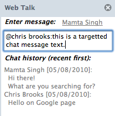
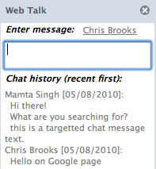

This is a web application that allows you to chat with other people browsing the same web site as you. It consists of Firefox extension as the client front end and a Java based web service as the backend.
This section gives the step-by-step guide to getting started and also describes the user manual for using the application.
$ cd server # go to the server sub-directory $ cat webtalk.properties # edit if needed using any editor $ java -cp webtalk-server.jar WebTalkServerOnce you launch the server, it starts the web server listening on default port 8080. Before starting the web server, you may edit the webtalk.properties file to change the configuration parameters such as port number, maximum sizes of user list and chat history per chat room, expiration duration for user data and list of domains for which the chat room is on per-page basis or disallowed. The configuration file has more documentation on these parameters. Once the web server is launched, it reads the configuration and serves any static content from the download sub-directory.
$ cd client # go to the client sub-directory $ cat webtalk.properties # edit if needed using any editor webtalkURL=http://localhost:8080/api $ ./build.sh # build the firefox extension $ cd .. $ cp webtalk.xpi server/download/webtalk.xpiI will describe later how you can dynamically change the web service host name in the client if needed.
$ /Applications/Firefox.app/Contents/MacOS/firefox-bin -ProfileManager
|  |  |
(This section similar to the project proposal I submitted earlier, so you may ignore it if you have already read the project proposal.)
This web application allows you to interact with other people who are browsing on the same web site as you. Today, people use blog posts and comments or forums to discuss a common topic of interest, and separate instant messaging applications to do real-time interaction. This project aims at combining the two, so that users can interact in real-time with other people who are viewing a common topic page or on a common web site. A new Firefox extension captures browsing events, and let the user automatically join the website specific chat room and interact with other users. The backend server acts as a chat server as well as stores the chat room specific data.
Web started out as a document sharing system and eventually also evolved into a global social interaction and social presence system. User generated content such as blog, forums, etc., are means to share views and ideas on common topics of interest, and their value increases as more people participate by leaving comments to blog or posting replies in forums. Such dynamic social content, in addition to emails, has become asynchronous mode of communication among users. On the other hand, synchronous communication such as instant messaging, text chat and phone calls are used to do more real-time interaction between friends, family and colleagues.
There is a need to combine the two: asynchronous communication among strangers on common topic, and synchronous communication among friends. This can be done by expanding the boundaries of synchronous communication to people interested in common topics by bringing the text chat to your browsing activity itself. If you are browsing a particular web page of web site, you already have a common topic with others browsing the same site. Enabling text chat among these people, and allowing them to interact in real-time brings a new social dimension to your browsing activity.
As an example, when you view cricket score on web sites, there is a shout-box area where all users can post their comment and interact in real-time about the ongoing game. There are other web sites that allow such chat boxes using web site specific JavaScript. This project makes this feature independent of web site, and puts it in the browser, and hence available to all web sites. This is different than traditional instant messenger where you have fixed list of friends. Instead, the user list is dynamic and mostly strangers.
This section describes the design and implementation of this client-server project. The client is a Firefox extension and runs in your browser application, and the server standalone web service implemented using Java restlet framework. The server uses in-memory data structures instead of external databases. This should change in future for larger scale deployment.
The project directory structure is shown below with a brief description of what each file does. All the source files are already well commented, so I am not repeating the detailed description here.
assignment5/ main project
+---- client/ client (Firefox extension)
| |---- build.sh script to build the extension
| |---- config_build.sh configuration to build the extension
| |---- chrome.manifest extension's manifest file
| |---- install.rdf extension's entry point
| +---- content/ source files of the extension
| |---- firefoxOverlay.xul main overlay changes in Firefox
| |---- about.xul user interface for 'about' dialog box
| |---- sidebar.xul user interface for sidebar
| |---- webtalk.js main script defining webtalk class
| |---- webtalk.properties defines web service URL
+---- server/ server (RESTful web service)
|---- webtalk-server.jar compiled web service JAR
|---- webtalk.properties server configuration
+---- .classpath, .project, bin/ eclipse project files
+---- lib/ external libraries
+---- src/ source files of the implementation
| |---- WebTalkServer.java main server application
| |---- Database.java in-memory data store
| |---- RoomTypeResource.java handle GET roomtype
| |---- UserListResource.java handle GET, POST userlist
| |---- ChatHistoryResource.java handle GET, POST chathistory
| |---- StaticResource.java handle GET download/
+---- download/ static files for help and download
|---- webtalk.xpi downloadable extension for localhost
|---- index.html this help file
|---- *.png supporting images for this help file
The data model defines the semantics of various data structures. A chat room location uniquely identifies a chat room. A location is either the domain, e.g., "www.cs.usfca.edu" for domain-specific chat rooms, or a full URL of the form "www.youtube.com/watch?v=somevideoid" for page-specific chat rooms. The location property is used as index in various tables to identify the chat room specific data.
The chat room types is stored in a sites table which is created on startup by reading the configuration file, and determines chat room type for particular domain names. It is indexed by domain name string, e.g., "www.youtube.com" or "mail.yahoo.com", and contains value of true if it has page-specific chat rooms and false if the chat room is disallowed. A missing domain in this table indicates default behavior of domain-specific chat rooms.
sites: table(domain => boolean)
The userloc table maps a user's client-id to the location of his current chat room. Each browser instance creates a new randomly generated client-id on launch and supplies it to the web service to identify the user. If the user is not in any chat room, his client-id is missing from the table.
userloc: table(client-id => location)
The userlist table maps the chat room location to the UserList data of that chat room. The UserList data of a chat room represents a list of User data, one per user, indexed by the user's client-id. The User data of each user has her client-id and screen name properties, and a timestamp when this user data will expire unless refreshed earlier. The UserList also has a version attribute which is updated each time the list is modified for that chat room.
userlist: table(location => UserList)
UserList: {
version: int,
data := table(client-id => User) }
User: {
client-id: string,
name: string,
expires: long }
The chathistory table maps the chat room location to the ChatHistory data of that chat room. The ChatHistory data of a chat room represents a list of Chat messages, one per text message. The Chat data represents a single text chat message and has properties such as sender, target, timestamp and text for sender name, optional target receiver name, timestamp of the message and the text of the message, respectively. The target property is optional, and if present, indicates the target user name to which this message is available, otherwise the message is available to all users in the chat room. The ChatHistory also has a version attribute which is updated each time the chat history is modified for that chat room.
chathistory: table(location => ChatHistory)
ChatHistory: {
version: int,
data := list(Chat) }
Chat: {
sender: string,
target: string (optional),
timestamp: long,
text: string }
The server exposes a RESTful web service API that allows the client to access the data on the server. The data is represented using JSON (JavaScript Object Notation) in the message body as needed. Additional attributes are supplied in the URL parameters. This section describes the web service details.
The roomtype resource allows knowing the room type of any domain. The server looks up the sites table to determine the room type and returns either domain, page or none in response.
GET /api/roomtype?location=www.google.com Response-body: domain GET /api/roomtype?location=www.youtube.com Response-body: page GET /api/roomtype?location=mail.yahoo.com Response-body: none
The userlist resource represents the user list of a chat room location. Fetching the user list looks up in the userlist table and returns list of users.
GET /api/userlist?location=www.google.com
Response-body: {"version":5, "userlist":[
{"clientId":"12345678", "name":"Mamta Singh"}]}
If a since parameter is supplied, then the server returns "304 Not Modified" response if the user list version in the server is same as the parameter value, otherwise return "200 OK" with response-body if the server data is different version. This helps in reducing the bandwidth for steady state operation when user list does not change.
GET /api/userlist?location=www.google.com&since=5 304 Not Modified
Doing a POST on the userlist resource allows a user to add his user data to the chat room user list. The server updates the userlist as well as userloc tables to add the user in the new location and remove from her old location based on the client-id.
POST /api/userlist?location=www.yahoo.com
Request-body: {"clientId":"12345678","name":"Mamta Singh"}
Besides implicit removal from old chat room, the client can explicitly remove the user from a chat room using the delete service on the userlist resource. The server removes the user data from the userlist and userloc table for her client-id. Since DELETE method is not easy to work with in JavaScript I use the following format.
POST /api/userlist/delete?location=www.yahoo.com
Request-body: {"clientId":"12345678","name":"Mamta Singh"}
The chathistory resource represents the chat history of a chat room location. Fetching the chat history looks up in the chathistory table and returns a list of chat messages. The since parameter is similar to earlier, where the server returns "304 Not Modified" if its version is same as the client version.
GET /api/chathistory?location=www.yahoo.com&since=12&target=Mamta%20Singh
Response-body: {"version":14,"chathistory":[
{"sender":"Chris Brooks","timestamp":1234567890,"text":"Hello on Google page"},
{"sender":"Mamta Singh","timestamp":1234567892,"text":"Hi There"},
{"sender":"Mamta Singh","timestamp":1234567894,"text":"What are you searching for?"}]}
If a target parameter is supplied, then the server also returns any chat messages that are specific for this target user in addition to the other public messages. Note that the location and target parameters must be escaped so that the server can correctly parse them. Additionally, Restlet interpretation of URL also requires that any "/" be escaped in the parameters, e.g.,
GET /api/chathistory?location=www.youtube.com%2fwatch...&target=Mamta%20Singh
Doing a POST on the chathistory resource adds a new chat message to the chat room.
POST /api/chathistory?location=www.yahoo.com
Request-body: {"sender":"Mamta Singh","timestamp":1234567892,"text":"Hi There"}
If a target parameter is supplied, then the server adds the target attribute to the Chat data, otherwise it is null indicating public message. If the target is supplied, then the server also checks whether the target user exists in the user list of the chat room and returns "404" response if not.
POST /api/chathistory?location=www.google.com&target=some%20user 404 Target User Not Found
There is no explicit mechanism to delete a chat history message. The server limits the size of the chat history per chat room by removing oldest messages.
Additionally, the server supports the /download resource to expose this help page as well as other static content such as installable webtalk.xpi extension file.
As mentioned before, the client is implemented as a Firefox side bar extension and displays the user list and chat history for the current chat room based on the web site visited on the current browser tab. The user manual section gives description of the user interface and how to use the client. This section describes the software design of the client.
The user interface are defined in various xul files, e.g., firefoxOverlay.xul defines main changes in the Firefox overlay such as menu additions and short-cut key handling, the about.xul defines the layout of the about dialog box that is displayed when you click on the "About Web Talk" menu item, and the sidebar.xul defines the layout of the sidebar such as the chat input box, chat history and user list. The webtalk.js file defines the main application class named webtalk. There are several properties and methods defined and well commented in this file. Rest of this section defines the working of the client.
When the webtalk sidebar is opened or closed, the webtalk object starts or terminates the web service requests. The client keeps the current location of chat room if any. It periodically fetches the user list and chat history as well as posts the user data to the chat room. This timer is active if the sidebar is open and client has joined a room. The decision when to join a chat room depends on the browser's location bar.
When the browser starts, the client installs the listener for the browser location change event. When the browser location or current tab's location changes, it finds out the room type of the domain of the new location. The result is cached so that next time it does not send the room type request for the same domain. Once the client knows the room type, it can determine whether the change in the browser location will result in the change in the chat room. For example, if the browser location was changed from "abc.com/first" to "abc.com/second" but room type of "abc.com" is "domain", indicating domain specific chat room, then the chat room hasn't changed. Whereas if the room type was "page" indicating page specific chat room, then the chat room has changed. Similarly if the browser location changes from "abc.com/first" to "xyz.com" then the chat room always changes irrespective of the room type because the domain of the location has changed.
If the client determines that the chat room has changed, it invokes three web service requests: first it posts the local user data to the chat room's user list, then it fetches the current chat history and then user list for the chat room. To avoid out-of-order of POST and GET of user list, the GET user list request is delayed by few milliseconds, so that the fetched user list contains my user data.
When the user enters a text in the input box to send a chat message, the client invokes the POST chat history web service to send the chat message. The client also parses any special format such as for targetted chat message or client configuration commands and acts accordingly.
When the user list and chat history are fetched, the version number is stored, so that in the next refresh interval, this version is supplied to the web service. The version is reset everytime the chat room location changes. The version saves bandwidth in steady state when user list or chat history is not modified in successive polling requests. The client updates the user interface whenever a new update of user list or chat history is received. The client displays the user list in sorted order, and the chat history in reverse timestamp order as described earlier so that it doesn't cause confusion in reading multiple sentences sent by the same user successively in the chat history. If the client receives any error response such as disabled chat room for a location, it indicates so in the text input box.
This section lists some known issues and trouble shooting tips.
I think this project is very nice idea and I would like to further explore it for open source or commercial reasons. I am listing a few ideas that can further enhance the software.
[1] Robert Nyman, "How to develop a Firefox extension"
http://blog.mozilla.com/addons/2009/01/28/how-to-develop-a-firefox-extension/
[2] "Shout-box" http://en.wikipedia.org/wiki/Shoutbox
[3] How to create a Firefox sidebar extension,
https://developer.mozilla.org/en/Creating_a_Firefox_sidebar
[4] How to listen for browser location change in Firefox extension,
https://developer.mozilla.org/en/Code_snippets/Progress_Listeners
[5] Restlet: RESTful web framework for Java, http://www.restlet.org/
© 2010, Mamta Singh. All Rights Reserved
http://www.cs.usfca.edu/~msingh4/webtalk